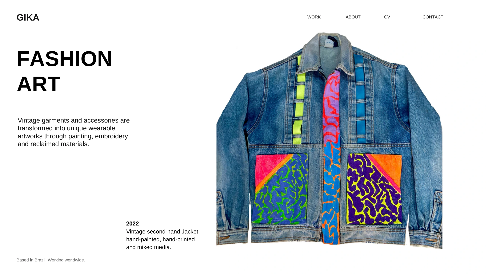
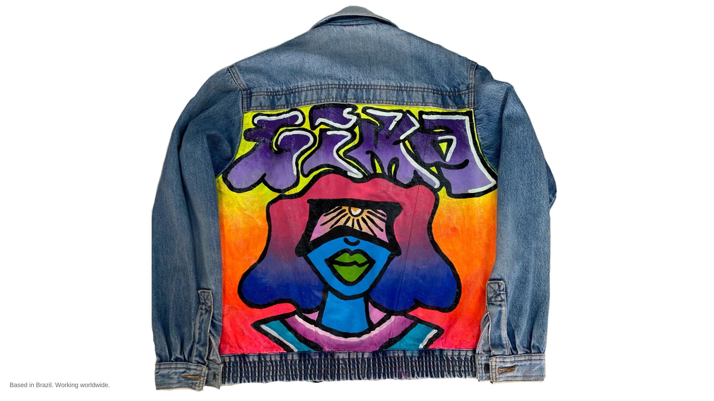
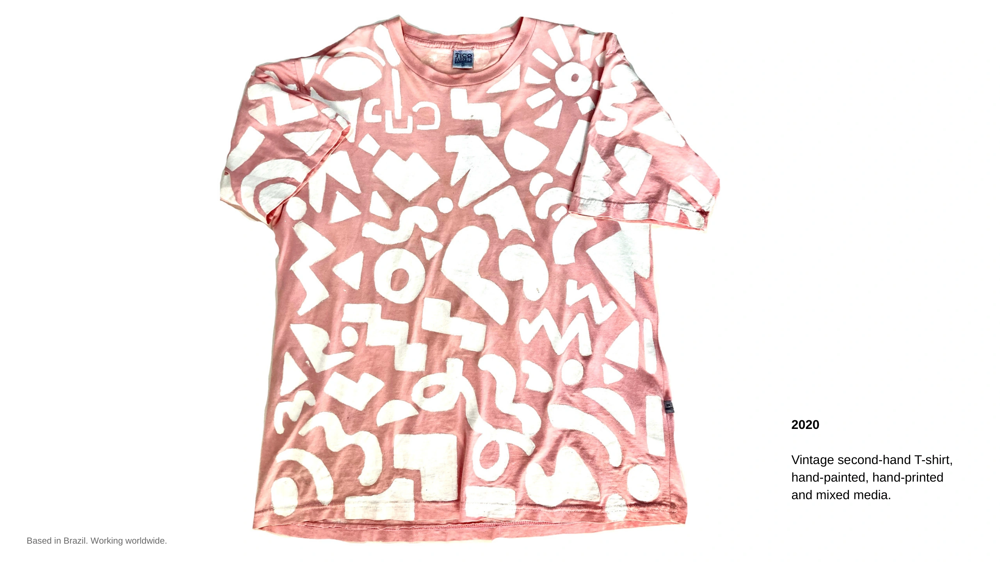
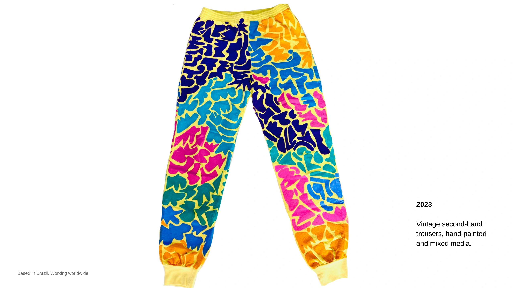
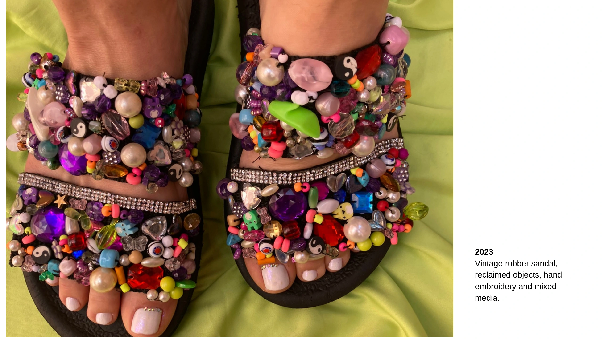

PORTUGUÊS
ARTE DE MODA Roupas e acessórios vintage são transformados em obras vestíveis únicas por meio de pintura, bordado e materiais reaproveitados. 2022 · Jaqueta vintage de segunda mão, pintada e estampada à mão, técnica mista. 2020 · Camiseta vintage de segunda mão, pintada e estampada à mão, técnica mista. 2023 · Calça vintage de segunda mão, pintada à mão e técnica mista. 2023 · Sandália de borracha vintage, objetos reaproveitados, bordado manual e técnica mista.